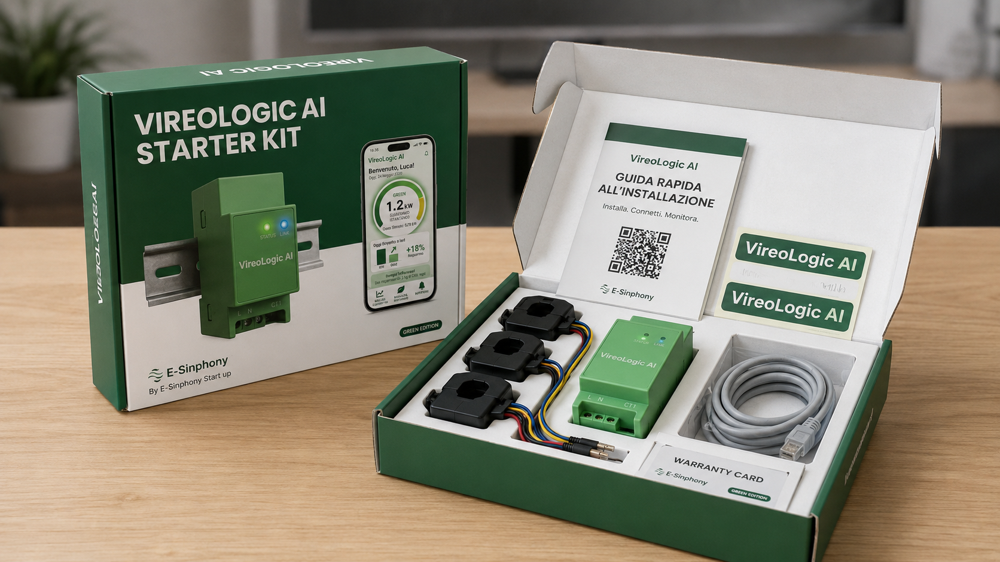

VireoLogic AI
Il cervello della tua casa intelligente
"Che cos'è VireoLogic AI"
- VireoLogic AI: Il cervello della tua casa intelligente. VireoLogic AI è un gateway compatto che si installa nel quadro elettrico della tua abitazione.
- Sente e Analizza: monitora i consumi in tempo reale.
- Protegge: avvisa in caso di rubinetto aperto o perdita nascosta d'acqua.
- Ottimizza: regola autonomamente i carichi energetici per massimizzare il risparmio.
"Perché VireoLogic AI è unico"
- Comfort Predittivo: l'AI anticipa le esigenze della casa.
- Monitoraggio Invisibile: riconosce ogni dispositivo senza installare sensori su ogni presa.
- Sostenibilità Vera: permette di vedere in tempo reale quanto la famiglia riduce la propria impronta di CO2.
"La tua casa sempre sotto controllo"
Dimentica le mille app per luci, clima e pannelli fotovoltaici. Con VireoLogic AI, hai un unico sistema che fa parlare tra loro tutti i tuoi dispositivi.
- Avvisi Intelligenti: ricevi notifiche push se qualcosa non va.
- Controllo dei costi: imposta un target di spesa mensile.


"VireoLogic AI Starter Kit"
- Modulo DIN: compatto e professionale.
- Pinze amperometriche: sensori robusti e precisi.
- Installazione rapida: QR code per la guida.
- Packaging ecosostenibile: progettato con materiali riciclati.